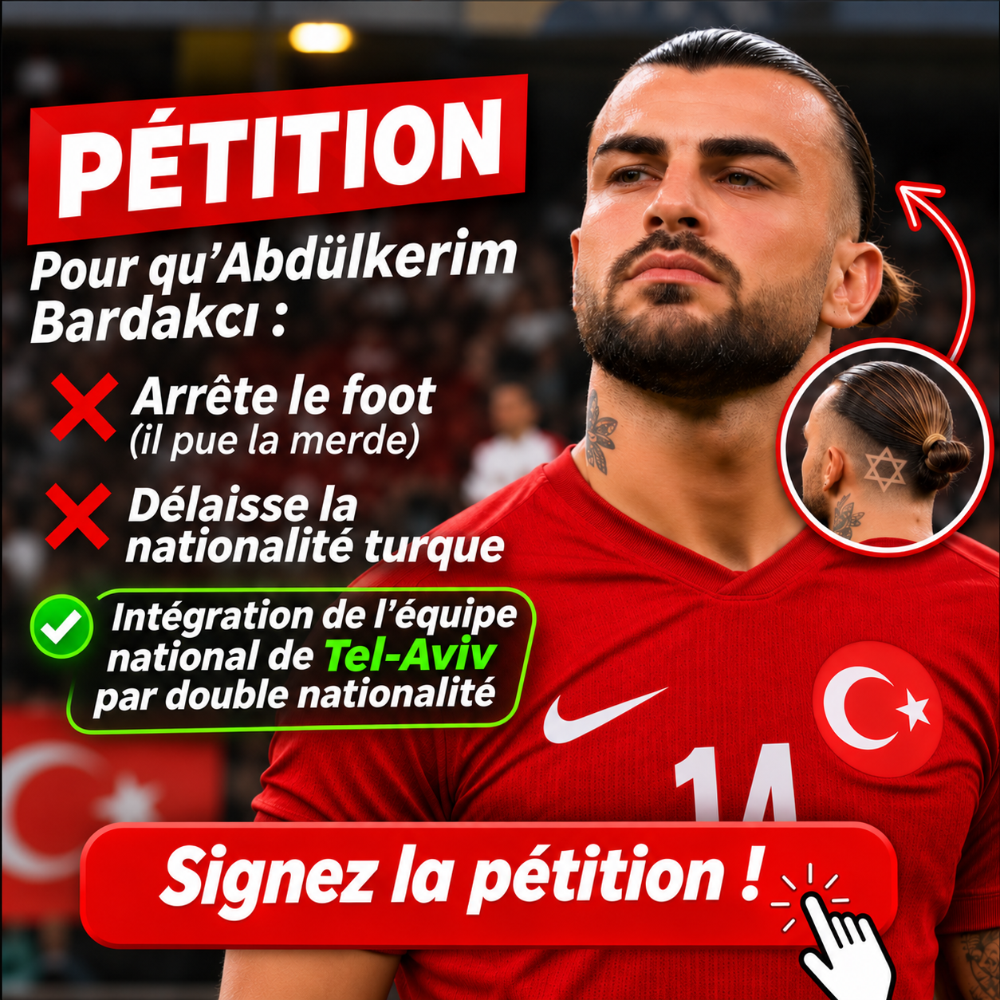

Campagne humoristique • Non officielle
Une pétition qui ne passe pas inaperçue.
Découvrez notre affiche satirique consacrée à Abdülkerim Bardakcı et exprimez votre soutien à cette pétition humoristique.

✍️ Signez la pétition !
Cette campagne est une parodie, sans affiliation avec le joueur, les fédérations ou une sélection nationale. Aucune signature officielle n'est recueillie ici.
Merci ! Votre participation a été enregistrée sur cet appareil.
Aucune donnée n'est envoyée à un serveur. Ce site ne dispose pas d'un compteur de signatures global.